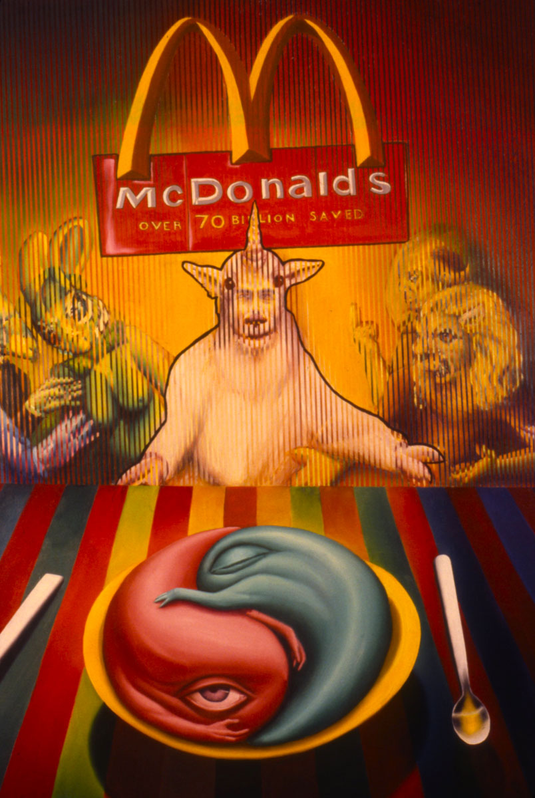

Exhibitions
Art on the Run, Grace Harkin Gallery, New York, New York, US, March 16–29, 1989.
Notes
Also known as Last Lunch.
This work appears in Artspeak, Vol. X, no. 14, March 16, 1989, illustrating coverage of Art on the Run at Grace Harkin Gallery.
This work references Leonardo da Vinci’s The Last Supper.

Ancillary Documentation